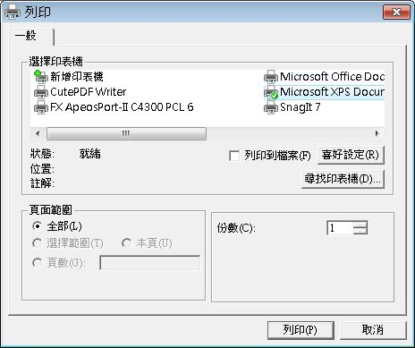

印 表機列印，基本上就是透過印表機在紙上進行繪圖的動作，印表機為一種繪圖裝置，在Qt中使用QPrinter作為印表機繪圖裝置的表現，您可以基於 QPrinter建立QPainter，然後使用QPainter進行圖形繪製，至於印表機的選擇、相關列印參數的設定，若是在圖形環境中，可以直接使用 QPrintDialog來顯示列印對話方塊，讓使用者可以選擇印表機及相關參數。
下面這個簡單的程式，示範如何使用QPrinter及QPrintDialog，您可以使用QFileDialog載入一個圖片檔案，並使用QPrintDialog設定印表機，然後將選擇的圖檔名稱及圖片本身列印出來：
#include <QApplication>
#include <QWidget>
#include <QLabel>
#include <QPixmap>
#include <QPrinter>
#include <QPainter>
#include <QFileDialog>
#include <QPrintDialog>
int main(int argc, char *argv[]) {
QApplication app(argc, argv);
QLabel *label = new QLabel("<center>Image</center>");
label->setWindowTitle("QPrinter");
label->resize(500, 100);
label->setFont(QFont( "Times", 18, QFont::Bold ));
label->show();
QString fileName = QFileDialog::getOpenFileName(label, "Open Image",
"C:\\", "Image Files (*.png *.xpm *.jpg *.gif)");
if(fileName != NULL) {
label->setWindowTitle(fileName);
QPixmap pixmap(fileName);
label->setPixmap(pixmap);
label->resize(pixmap.width() , pixmap.height());
QPrinter printer;
QPrintDialog printDialog(&printer, label);
if (printDialog.exec()) {
QPainter painter(&printer);
painter.drawText(50, 50, fileName);
painter.drawPixmap(50, 100, pixmap);
}
}
return app.exec();
}下圖為執行時出現QPrintDialog的參考畫面：

若要列印時進行換頁，可以使用QPrinter的newPage()方法，若要中斷印表機列印，則可以呼叫abort()方法，您也可以透過 QPrinter來產生pdf檔案，只要執行QPrinter的setOutputFormat(QPrinter::PdfFormat)，並使用 setOutputFileName()設定輸出的檔案名稱，例如：
printer.setOutputFormat(QPrinter::PdfFormat);
printer.setOutputFileName("QPrinterOutput.pdf");
printer.setOutputFileName("QPrinterOutput.pdf");
若 不想透過QPrintDialog的方式設定QPrinter的相關參數，則可以使用QPrinter上的幾個方法來設定，像是 setOrientation()設定紙張方向，setPageSize()設定紙張大小，setResolution()設定列印的DPI（Dots per inch）解析度，setFullPage()設定是否整張紙作為列印，setNumCopies()設定列印份數等。